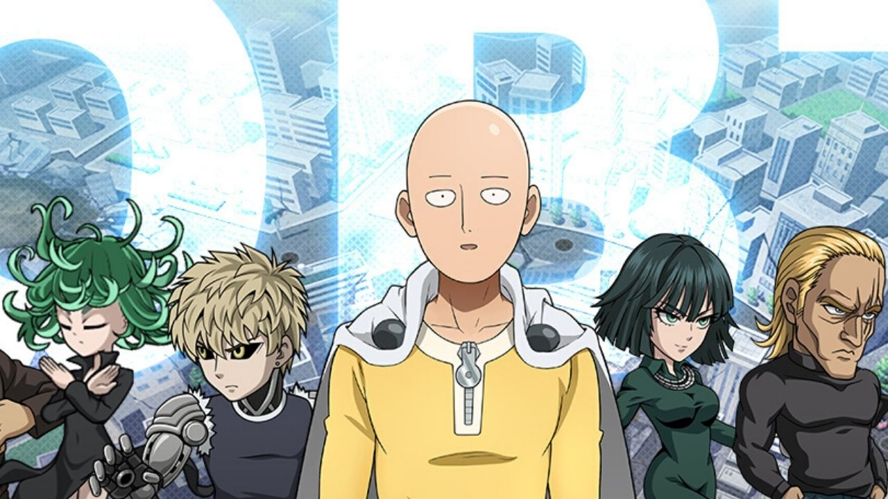

One Punch Man: Road to Hero 2.0 launches on June 30
One Punch Man’s first season, released in 2015, was a massive success due to its unique story and compelling animation.
One Punch Man’s first season, released in 2015, was a massive success due to its unique story and compelling animation.
In the first season of One Punch Man, Drive Knight – S rank Hero, warned Genos to remain wary of Metal Knight and suggested that he may be the one who was behind the Mad Cyborg incident.
While Saitama has been shown as someone who is undefeatable, there are still some who doubt this. This is true, especially considering the fact that the number one hero of the Hero Association is absent and shrouded in mystery.